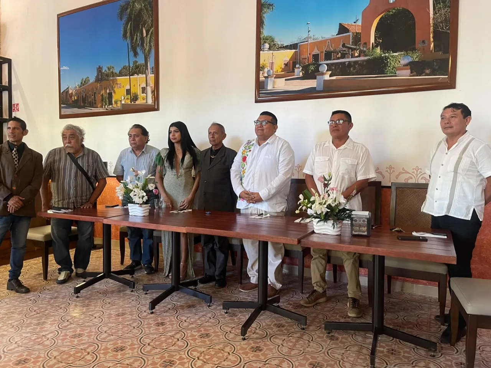
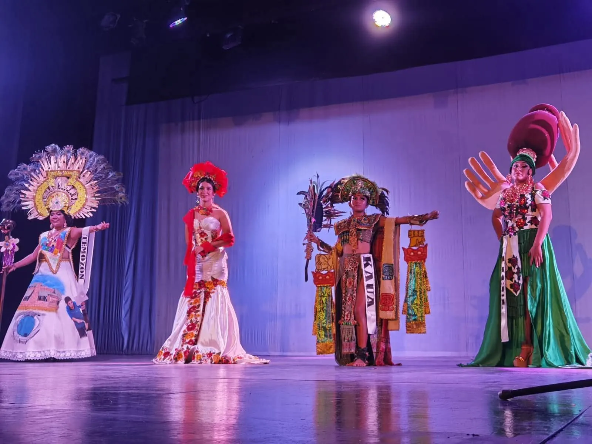
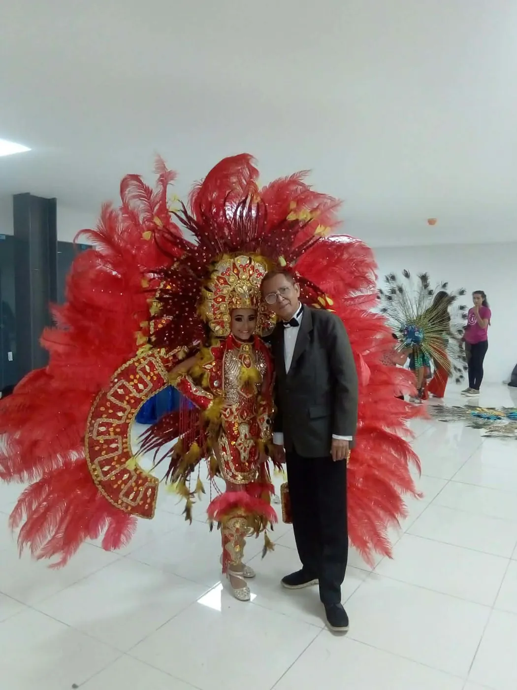
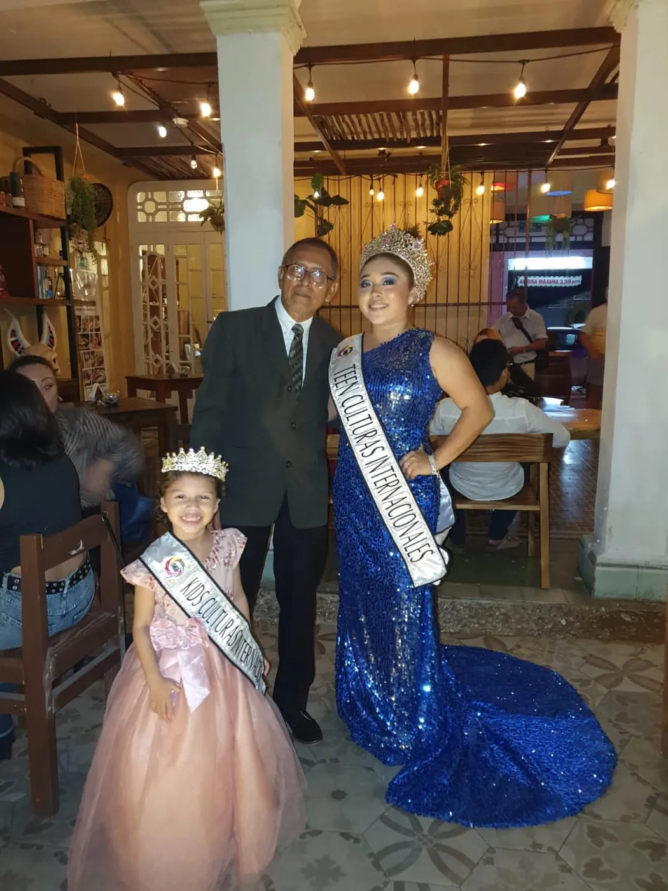
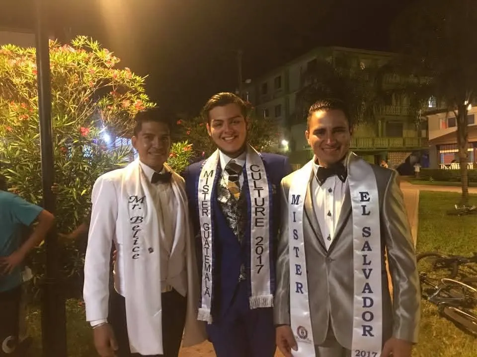
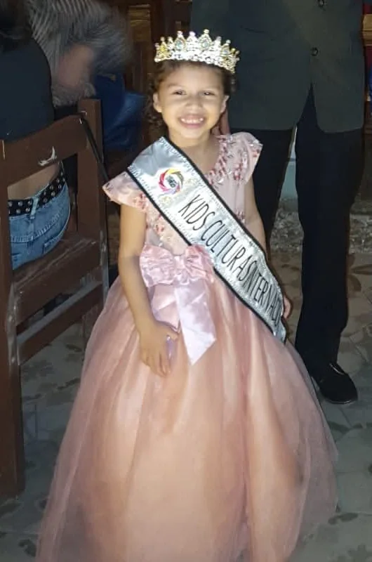
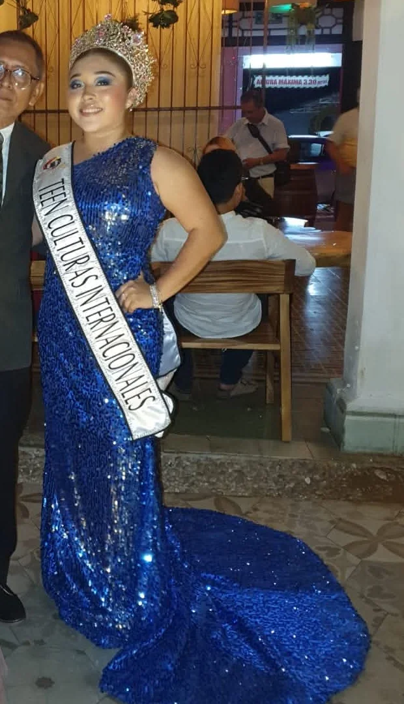

Preservación
Lenguas, textiles, ritos y oficios viven en las personas. El certamen les da visibilidad para que pasen de generación en generación.
Certamen de Belleza Cultural
Certamen sin fines de lucro que lleva los trajes típicos y las tradiciones de los pueblos a una pasarela internacional.
Del 26 al 29 de noviembre, Tetiz y Mérida reciben la Gran Final Internacional. Cuatro días con la cultura sobre el escenario.
Faltan para que inicie la Gran Final Internacional
Quiénes somos
Cada traje típico guarda una historia. Cada corona es un compromiso con la memoria de los pueblos. En Mr. & Miss. Culture International Maya no premiamos solo la belleza: preservamos las culturas del mundo y les damos el escenario que merecen.

El vestuario es la voz de un pueblo
Bordados, plumas y símbolos que cuentan de dónde vienes. Sobre el escenario, tu comunidad deja de ser telón de fondo y se vuelve protagonista.

Lenguas, textiles, ritos y oficios viven en las personas. El certamen les da visibilidad para que pasen de generación en generación.

Cada delegado representa a su comunidad con su traje típico, su historia y su orgullo. Aquí nadie se disfraza: cada quien se presenta como es.

Quien porta la corona se convierte en voz de su cultura y la comparte mucho más allá de la noche de gala.

Somos una organización sin ánimo de lucro. Nuestro motor es la cultura, no la ganancia, y nuestra fuerza son las familias que la sostienen.
Categorías
Niñas, niños, jóvenes y adultos desfilan con su cultura. Encuentra la categoría que lleva tu nombre.

Culturas Internacionales
Las voces más pequeñas descubren el orgullo de sus raíces sobre el escenario.

Culturas Internacionales
La juventud que hereda la tradición y la lleva con seguridad y carácter.
Culturas Internacionales
Mujeres que representan a su pueblo con elegancia, historia y vestuario monumental.
Culturas Internacionales
Hombres que dan rostro a su cultura y hermanan a las naciones del mundo maya.
Cuéntanos tu edad y tu comunidad. Te orientamos sin compromiso.
Descubrir mi categoríaPasarelas, coronas y comunidades unidas. Toca una imagen para verla en grande.
La cultura se vive, se comparte y se hereda.
Seis pasos para llevar tu cultura del deseo al escenario.
Pide la convocatoria por WhatsApp y resuelve tus dudas con el equipo del certamen.
Kids, Teen, Miss o Mr. Te orientamos para que encuentres la que va contigo.
Escoge la comunidad, la historia y el traje típico que te representan.
Reúne vestuario, relato y todo lo necesario para tu paso por la pasarela.
Presenta tu cultura en la etapa de Trajes Típicos y en la Gran Final Internacional.
La noche de coronación celebra a quienes llevan su cultura con orgullo.
Mundo Maya
Una misma raíz conecta comunidades de México, Guatemala, Belice y El Salvador. El certamen las reúne en una sola pasarela.
Súmate como aliado cultural y comparte escenario con una causa sin ánimo de lucro que mueve a comunidades enteras.
Quiero ser aliado culturalTu marca frente a 2.6 mil seguidores y al público de la gala.
Acompañas la preservación de tradiciones que dan identidad a toda una región.
Conectas con familias, delegados y pueblos que valoran a quienes los respaldan.
Es un certamen de belleza cultural sin fines de lucro, también conocido como Miss & Mr Culturas Internacionales. Su objetivo es preservar las culturas del mundo a través de la pasarela, los trajes típicos y la identidad de cada pueblo.
Existen las categorías Kids, Teen, Miss y Mr. Escríbenos por WhatsApp y te compartimos los requisitos y la convocatoria vigentes para la tuya.
Es el momento en que cada delegado presenta el vestuario tradicional de su comunidad, con su historia y su significado. En esta edición se celebra el sábado 28 de noviembre en Tetiz, sede oficial.
La Gran Final Internacional se celebra el 29 de noviembre en Mérida, Yucatán, dentro de un programa que va del 26 al 29 de noviembre.
Los detalles de inscripción se comparten junto con la convocatoria. Escríbenos por WhatsApp y te los enviamos sin compromiso.
Escríbenos desde la sección de aliados. Te presentamos las formas de colaborar y cómo tu marca acompaña una causa cultural sin ánimo de lucro.
¿Se quedó una duda en el aire? Resuélvela por WhatsApp
Cuéntanos quién eres y de dónde vienes. Nosotros nos encargamos de que te escuchen.
Estoy listo, empecemosLlena el formulario y abrimos una conversación por WhatsApp con tu mensaje listo para enviar.